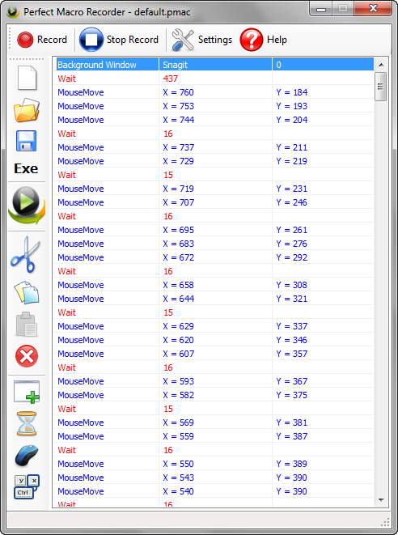
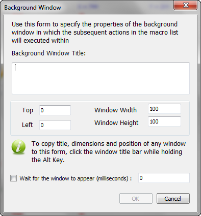
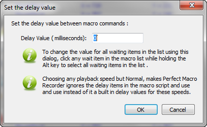

Perfect Macro Recorder Screenshots
Hover on any image to enlarge it.

Main window of Perfect Macro Recorder.
General Options.
Playback Options.
Keyboard Shortcuts.
Compile your macro to an exe file.


Set a background window for an action.
Set a delay value between two actions.
Add a mouse command.
Add a keyboard actions.